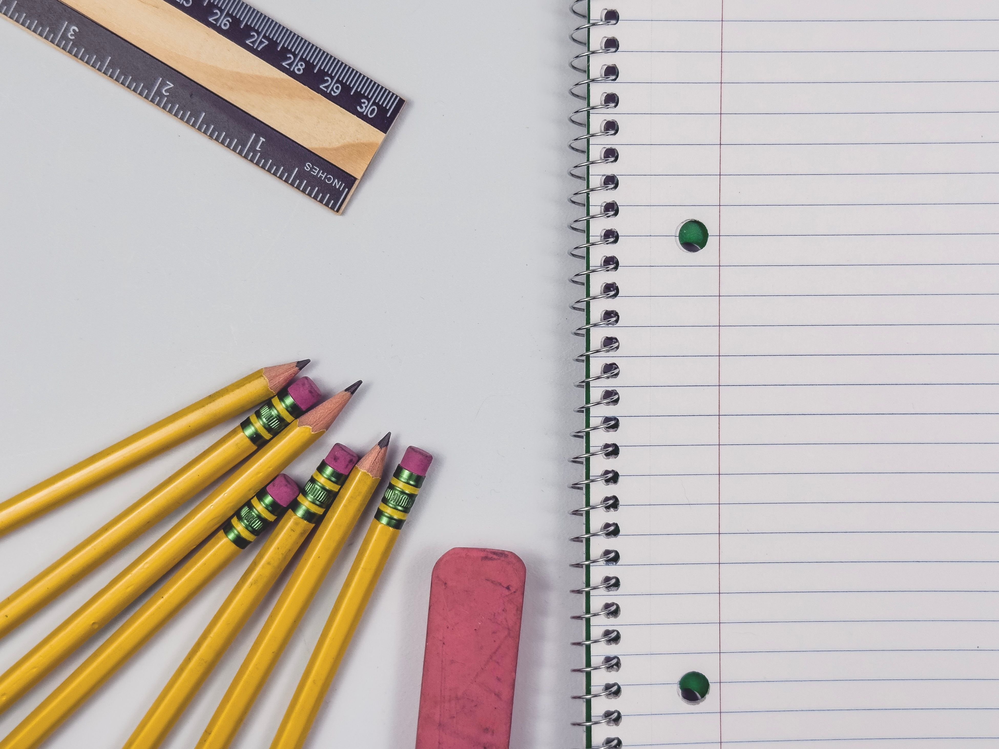

Marketing and PR
I initially went to an out-of-state university in Connecticut named the University of Bridgeport to study Fashion Merchandising. When that didn't work out, I spent a year working in retail before starting over at New Jersey City University in Spring 2011.
While selecting my classes toward the end of my freshman year, I added a Marketing course to my schedule. As the professor began teaching the class, I became hooked on the lessons she taught and how she explained everything. When I spoke to her, she explained that I wasn't supposed to be taking the class because there was a prerequisite that I hadn't completed. She also told me that I was a visual learner, meaning I learn better by seeing and doing rather than just listening.
I declared my major as Marketing at the beginning of my sophomore year, and she took me under her wing. She began setting me up with a roadmap of classes to take with professors who taught the same way she did, with the goal of graduating in Spring 2017.
When I became a junior, I enrolled in a Public Relations course that further solidified my interest in the field. The professor's teaching style resonated with my visual learning preferences, and I found myself genuinely excited about the subject matter.
I built a rapport with her and created an Integrated Marketing Communications (IMC) plan for a local nonprofit organization. Although my plan wasn't chosen for implementation, it became something I could include in my portfolio.
During this time, I was writing for the school newspaper, managing social media accounts, and working as an intern for a local nonprofit organization.
During my internship, I wrote a press release and sent it to local media outlets. Several outlets published my press release, which was a great accomplishment for me as a novice in the field.
I also created an event flyer that was used in an email campaign. Both the press release and flyer became part of my portfolio.
In my senior year, I enrolled in three different classes taught by the same professor who taught my Public Relations course. I learned more about marketing and public relations materials used in the industry.
I also wrote a senior capstone project about social media and its impact on consumer behavior.

